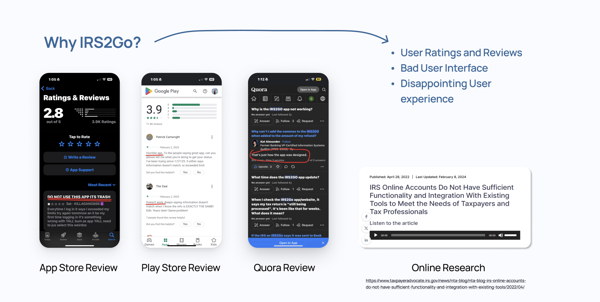
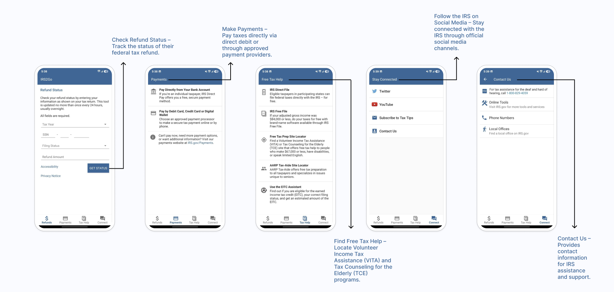
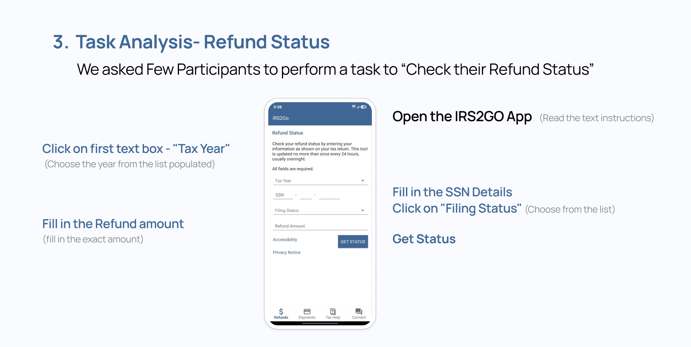
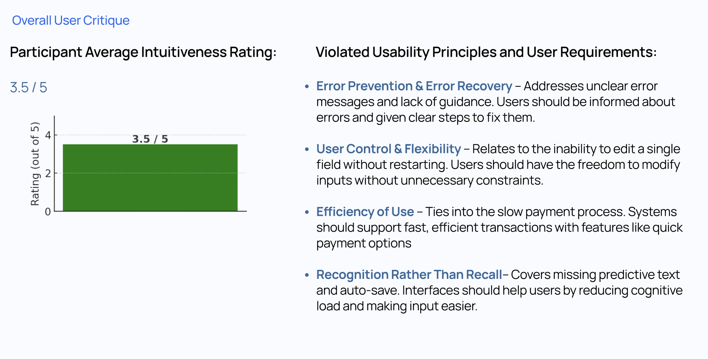
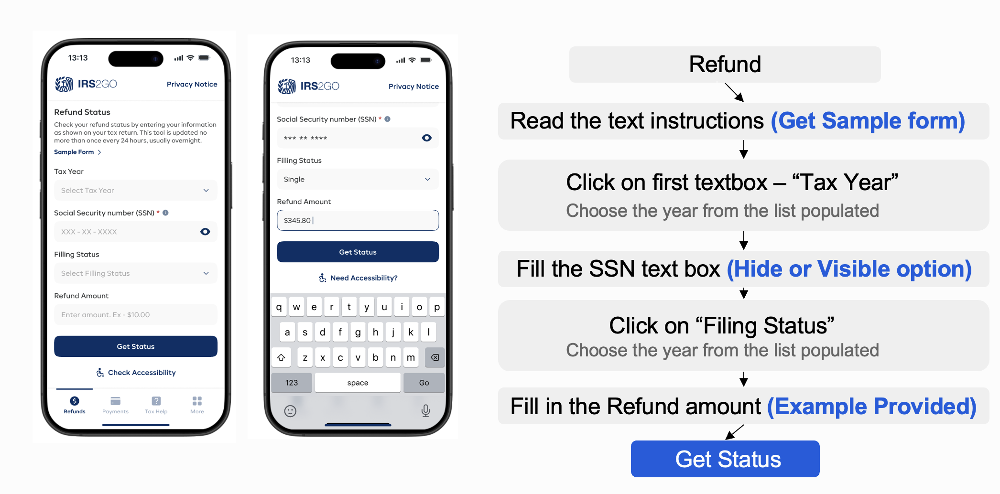
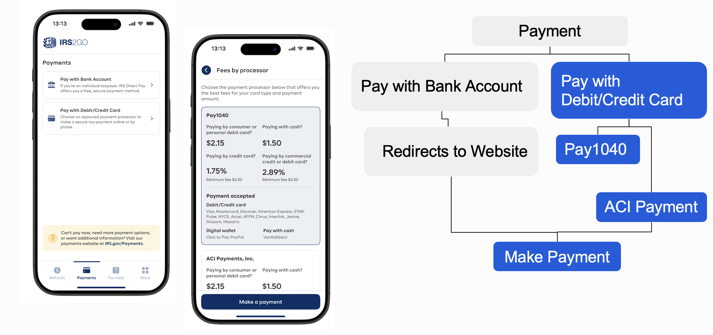
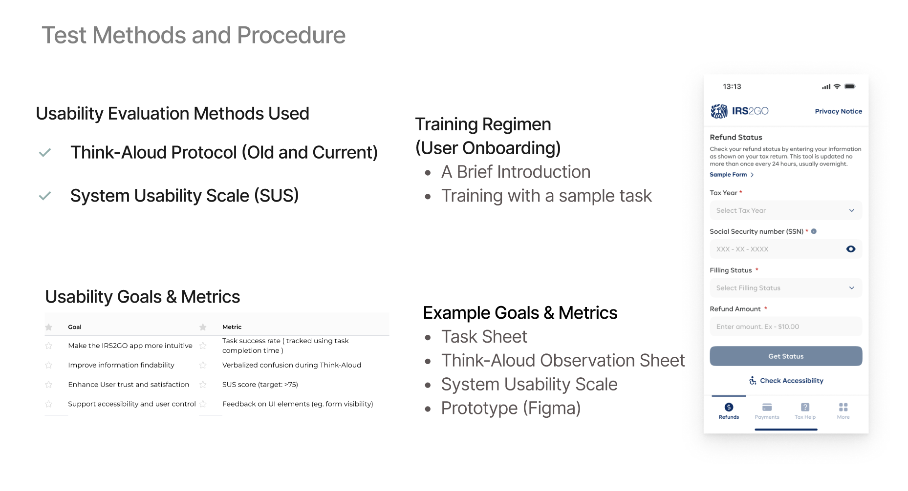

Problem
The official IRS2GO app suffered from unclear navigation, poor accessibility, and forced redirection to the web. Users struggled with repeated data entry, confusing flows, and task disorientation.
Research
Research included app review mining, heuristic evaluation, and task analysis. We documented core pain points and real user quotes from surveys and interviews.

Double‑click to view full screen
Double‑click to view full screenDefine
We defined user needs and usability violations using Nielsen heuristics and accessibility criteria.

Double‑click to view full screen
Double‑click to view full screenUser info should be remembered automatically.
Inline guidance to reduce mistakes.
Ideate
Ideation focused on task simplification, visual clarity, and guided user flows. Sketches explored auto‑fill, feedback modals, and inline context.
 Double‑click to view full screen
Double‑click to view full screen
 Double‑click to view full screen
Double‑click to view full screen
Design
High‑fidelity screens were designed with accessibility in mind: increased contrast, clear hierarchy, and inline guidance.

Double‑click to view full screen
Double‑click to view full screenTesting
Prototypes were tested with a mix of novice and experienced users. Task completion improved with positive feedback on clarity and flow.

Double‑click to view full screen Double‑click to view full screen
Double‑click to view full screen
Skills Used
- User Research
- Heuristic Evaluation
- Interactive Prototyping
- Accessibility Design
- Mobile UX